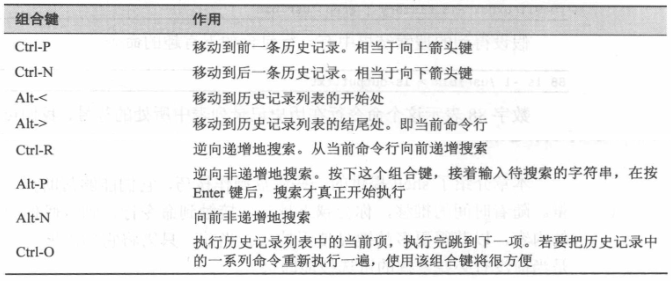

1. 简单的文本处理命令
1.1. less
opposite of more
查看文本文件内容
less 查看文件时，常用的键盘命令
- vim 中的上下滚动命令均适用
- /characters ：向前查找指定字符串
- q ：退出 less
less filename
history | less
- 内容界面操作快捷键

1.2. cat
concatenate files and print on the standard output
合并文件
读取一个或多个文件，并把它们复制到标准输出文件中
cat file...
cat file... > result_file # 将 files 合并为 result_file
cat file* > result_file # 通配符一般都是按顺序扩展的
cat > file # 从标准输入读取内容，并重定向到 file 中
cat # 没有重定向，这样会输出到标准输出
# Ctrl-D 用于输入文件尾(end-of-file, EOF)
1.3. sort
sort lines of text files
排序
通过引入 sort 命令，可以改变输出数据，从而产生一个排好序的列表
示例
ls /bin /usr/bin | sort | less
1.4. uniq
report or omit repeated lines
报告或忽略文件中重复的行
uniq 可以接受来自于标准输入或者一个文件名参数对应的已排好序的数据列表
默认情况下，uniq 会删除列表中的所有重复行
需要查看重复行的列表，可以在 uniq 命令后添加 -d 选项
示例
ls /bin /usr/bin | sort | uniq | less
ls /bin /usr/bin | sort | uniq -d | less
1.5. wc
print newline, word, and byte counts for each file
打印行数、字数和字节数
wc 接受标准输入内容
选项
- -l：统计行(line)数
- -w：统计字(word)数
- -m：统计字符(char)数
- -c：统计字节(byte)数
1.6. grep(简单介绍)
print lines that match patterns
- 通过模式查找匹配的文本
grep pattern [file...]
- 选项
- -i：忽略大小写
- -v：查找与模式不匹配的行
1.7. head
output the first part of files
打印文件的开头部分。默认 10 行
选项
- -n：设置输出的行数
1.8. tail
output the last part of files
打印文件的结尾部分。默认 10 行
选项
- -n：设置输出的行数
- -f：用于实时查看文件最新内容
1.9. tee
read from standard input and write to standard output and files
- 从 stdin 读取数据，并同时输出到 stdout 和文件(可多个)
command1 | tee file... | command2